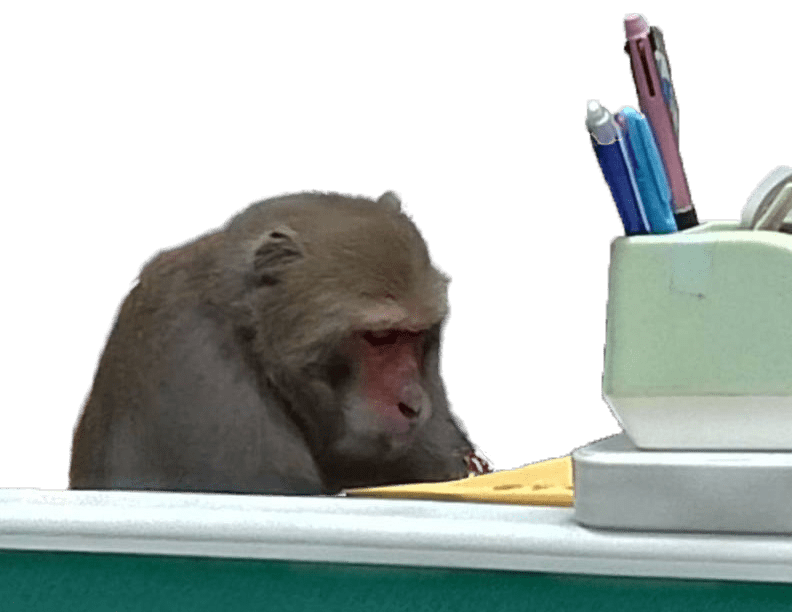
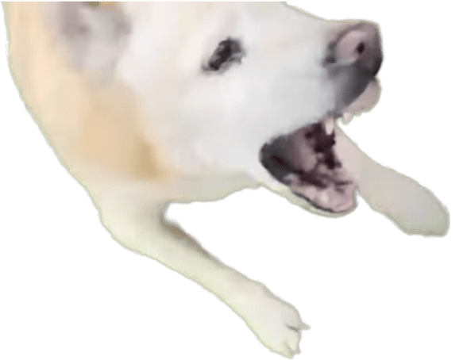
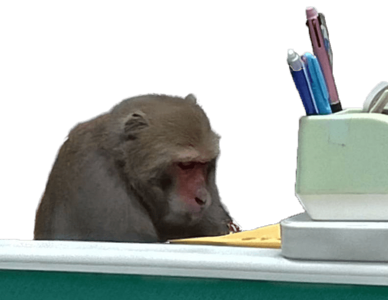
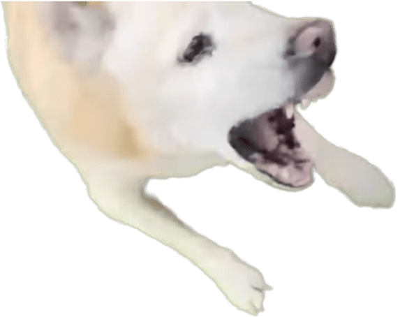

在這個舞台上，會給你們帶來各位滿滿的大！平！台！謝謝你力量人，我的超人 歐買尬！你遜斃了！你要不要聽聽看你現在在講什麼？
在這個舞台上，會給你們帶來各位滿滿的大！平！台！謝謝你力量人，我的超人 歐買尬！你遜斃了！你要不要聽聽看你現在在講什麼？
颱風天就是要泛舟啊！不然要幹嘛？你要不要吃哈密瓜？哈密瓜有一種哈味 有的人喜歡有的人不喜歡 修但幾勒 葛歌母湯哦
颱風天就是要泛舟啊！不然要幹嘛？你要不要吃哈密瓜？哈密瓜有一種哈味 有的人喜歡有的人不喜歡 修但幾勒 葛歌母湯哦
大排長隆 出事了阿伯 完全沒有畫面 假如你生氣 假如你生氣 仰望耶穌 仰望耶穌 感恩seafood 讚嘆seafood 法喜充滿 業力引爆
穿山甲欸！嗚呼！這可以養嗎？我不敢相信咕嚕 恰恰！觸 雀食 中華路二段55號 收到！ 只有今天限定 冰冰姐～泡湯～（YA）
拿聖靈寶劍 斷開魂結！斷開鎖鏈！斷開一切的牽連！燒毀你與他之間所有的網羅 燒毀！ 然後呢？然後他就死掉了
你還敢講！我的噴火龍勒！我的尼多王勒！我的尼多王勒！剩一隻水箭龜！５等５等２０？ 你在大聲什麼啦！ 重點是...重點是...甘哇闢蘇啊
你知道這是什麼嗎？可不可以放進去一下下就好 不可以色色 都幾歲了 還那麼害羞 我看你 完全是不懂喔！ 雖然我不是數學家但這聽起來不錯對吧？
唉呦 你臉紅啦 來 聽話 讓我看看！ 李組長眉頭一皺發現事情並不單純 我們雙龍村不是大拇指就是... 一定是大拇指啦！
我們店裡沒有賣珍珠奶茶 哦你是說QQㄋㄟㄋㄟ好喝到咩噗茶 講出來 你是忘記了 還是害怕想起來？ 假的！哎呀！我眼睛業障重啊！洗勒哈囉？
三份穿褲子的豬，一盤熱空氣，一份祖母的早餐籃，把牛變成鱒魚，知道了 淡定紅茶 ˊ_>ˋ 這要我開我還真的不敢開啊

台
灣
迷
因


 


